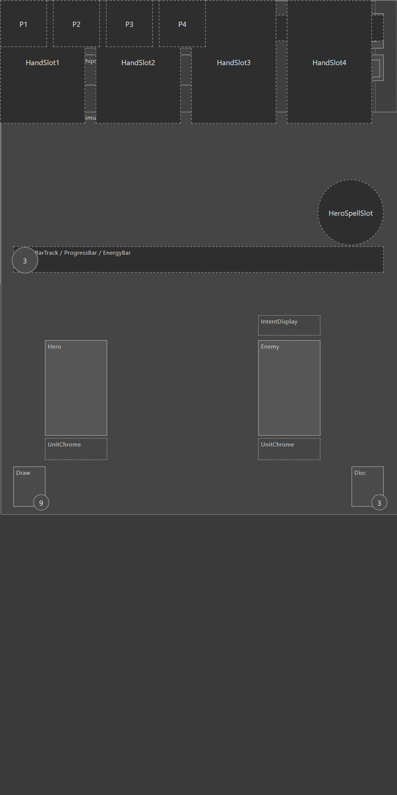
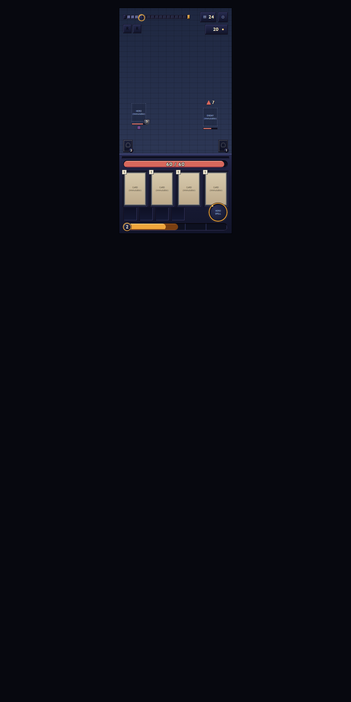

How my game got an AI team, and what it isn't allowed to decide.
Dungeon Heroes is the mobile game I'm making, and since August 2026 a team of AI agents has worked on it with me. An agent here is an AI model, one of Anthropic's Claude models, given one written job such as programmer or menu builder. A manager agent starts up every hour, hands out the tasks, reads every change that comes back, and brings me only the decisions where a mistake would be costly. Once a day a separate review checks the manager's work, and I decide what changes.
Before the team: my first AI system built game screens from a written brief, and wasn't allowed to make anything up.
The team's predecessor, now retired, was a pipeline: a fixed chain of twenty steps, most of them an AI model doing one task, that turns a written description of a game screen into the screen itself.
You write a brief in plain language, something like "a hero card with a portrait, a level and an equip button".
The twenty steps take it to a finished screen in Unity, the engine the game is built in: layout, art direction, wiring up the components, checking the finished scene (Unity's word for one screen or level of the game).
AI models tend to fill gaps with things they made up. So no step hands the next one free text: every handoff is a form with fixed fields, and a detail that isn't on the form can't travel down the line.
At five points the chain stops and waits for me to approve before anything expensive happens further down. Two sets of screens it produced, the hero collection and the library, are in the game.
In May 2026 I gave an AI model a hard programming problem for the first time, and got back work I'd have been happy to put my name on. This pipeline was the first system I built around that. I wrote it in Python with LangGraph, a toolkit for chaining AI steps.
- no model · 2024 to 2025
- nothing · the AI I built in 2024, for Degen Crawler, was a hand-written expert system
- Claude 3.5 Sonnet
- renaming things
- Claude Opus 4
- tidying existing code
- Claude Opus 4.8 · May 2026
- the hard parts
- the team · now
- most of the day's changes · the manager checks them, the costly ones wait for me


- one model checks another
- about half the money · 730 problems raised · 0 real
- the three cheap checks
- every real bug
- decision
- check against the real thing
One of its checking steps raised 730 problems. None of them were real, so I cut it.
AI models are paid for by use, so every run has a price. The pipeline kept a ledger of its own work: every run wrote down what each step cost and what each check found. After the pipeline had run from start to finish three times, I went through it.
- The step where one AI model read another's work looking for mistakes had raised 730 problems across the runs I audited. Not one was real.
- It was eating about half the money, and the other steps spent most of each run waiting on it.
- The cheap checks had caught every real bug on their own: does the code build, does the file exist, is the component in the scene?
So checking moved onto things that give a definite answer: whether the code builds, whether the file exists, what is actually in the scene.
That audit is why I retired the pipeline in August 2026: about half its cost went on a check that found nothing, and more of its problems came from its own machinery than from the models' work. By then its screens were in the game. What replaced it, the AI team described below, kept its fixed-field handoffs and its approval stops and dropped the rest.
Then I wrote down my own job as manager, and gave it to an AI agent.
For a while I was the manager: I wrote the to-do list, handed the tasks to the agents, checked the results and added them to the game. Then I wrote that job down as a step-by-step procedure an AI agent can follow, and set it to run every hour.
Every hour a manager agent starts up. It makes sure the game still builds, picks up anything I've answered, and only then hands out the next round of tasks. Work that needs the Unity editor goes first, because only one agent can use the editor at a time. Everything else runs side by side, each agent in its own copy of the project.
The to-do list is a task board that both I and the agents add to. When it's empty, the run simply ends. If a run crashes, the next hour's run picks up where it stopped.
The team has eighteen agents. Each one is a written job description, such as gameplay programmer, menu builder or game designer, carried out by one of Anthropic's Claude models. Thirteen of them take work from the manager; the other five, such as a concept artist and an art critic for menus, aren't part of the hourly run. It all runs on Claude Code, Anthropic's tool for letting Claude work on a codebase. The job descriptions, the manager's procedure and the automatic checks are files I wrote.
Several agents working at once is the point of having a team, and it is also the main risk: two agents editing the same file overwrite each other's work. So I didn't guess which agents can safely work side by side. I looked at the last three hundred changes to the game and counted which files tend to change together.
- One question picks the model for most agents: how expensive is it when this agent is wrong? Writing task specifications, art direction, setting up character animations and the store paperwork get the strongest, most expensive Claude model. Programming that follows a known pattern gets a mid-priced one. The exception is work that depends on taste, such as designing a relic, writing the game's text or sketching a menu: that goes to the model whose taste I trust most.
- Four core gameplay files (the code for spells, the hero, the game loop and characters in general) tend to change together: when a change touches one of them, 40 to 80% of the time it touches another as well. So only one agent at a time may work on those four.
- Unity's scene and settings files can't be combined afterwards if two agents edit them at once, so those edits go through a single queue, one writer at a time. Everything else runs in parallel, each agent with an explicit list of the files it may touch.
How expensive is it when this agent is wrong?
- very expensive
- the strongest model · spec writer art director character animation setup store paperwork
- less · the work follows a pattern
- a mid-priced model · gameplay programmer tools programmer menu builder
- it's a matter of taste
- the model whose taste I trust most · game designer game text writer illustrator
What the manager isn't allowed to decide: taste, money, the store page, save files.
Which questions reach me is decided by how expensive it is to be wrong, not by how hard they are:
- It decides by itself, and tells me afterwards, anything an automatic check can answer or that's easy to undo. Its note reads: "applied this, because of that, say so if it's wrong."
- It writes up for me anything about taste, a tuning number (how strong a spell is, say), a name for something in the game, anything later decisions will lean on, anything only playing the game can answer, money, the store page, the save files. It refuses to guess at those.
- One more test before a question reaches me: would my answer let an agent carry on with its work? If not, it isn't a question, it's a job only I can do (drawing an icon, say), and it goes on a separate list so the decision list stays short.
Nobody is at the keyboard when the manager runs, so it never stops to ask. Once, a pop-up question appeared at three in the morning and the whole run sat waiting for an answer. The next day I wrote the rule: the manager never asks mid-run, and puts its questions on my decisions page instead.
Every question becomes a written decision instead: one bolded question, the options, what each one costs in a single line, and the answer the manager would pick. The work that raised it waits until I've answered.
Should the toughest enemies attack faster from difficulty level three up?
- applied
- renamed a setting used in eleven places in the code
- because
- builds · tests pass · one step to undo
- flagged
- say so if this is wrong
- taste
- a relic's name · a tuning number · how a screen reads
- precedent
- anything a later decision would lean on
- money
- prices · purchases · the store page · the save files
What reaches me: at most five decisions, and a diary of the day.
After every run the manager updates one web page for me: a diary of what the team did, and at most five decisions, each with the manager's recommended answer already selected.
The diary is a development log written as prose, because I asked for conclusions rather than lists of changed lines.
The decisions are ranked by importance. Most of the time I agree with the recommendation, so a decision takes a glance and a click.
Answers are kept on record, so a question I've answered stays answered when the next run acts on it.
Below the decisions, the page lists the things only I can do, the sketches waiting for a yes, and what got done.
What this whole design tries to shorten is how long a question waits for me.
- A question that goes back and forth four times, with me answering every four hours: two working days.
- The same four, answered within the hour: an afternoon.
So the manager runs every hour, and the page is built so that answering takes me minutes.
The manager's summary of the day ends with one line: how many things are waiting on me. Keeping that number small is what the hourly runs are for.
diary
Difficulty levels one and two are tuned, and the question about tougher enemies from level three is yours. The relic screen is built and on hold until the damage cap is settled. The tools agent found an out-of-date build script and reported it rather than fixing it, because that file isn't on its list.
needs you 3
- 1tougher enemies from difficulty level three · B recommended
- 2a damage cap for spells that hit several times · B recommended
- 3sketch of the inventory menu, sized for thumbs · approve or redraw
only you can do this
- ·record the new hit sound on the device
done since you last looked
- ·six pieces of work added to the game · one held for your review
Nothing goes into the game that the manager hasn't read.
The manager reads the change itself, line by line, not a summary of it. Every agent reports back in the same format: the task, where the work is, the files it touched, which checks it ran, what a reviewer should verify, how confident it is in its own words, and anything it noticed outside its task.
That can look like the mistake from the audit, one model checking another. The difference is what has the last word. After reading, the manager builds the project, which takes seconds, and runs the quick automated tests on the combined result before adding the next piece of work. If the build or a test fails, the change doesn't go in, whatever the manager thought of it. Reading is there for what tests can't see, like a file that changed with no reason to.
When an agent says a scene works, the manager opens it in Unity and reads any error messages itself instead of taking the agent's word.
Some things it will never add on its own:
- anything touching money, purchases, or the store listing
- a build of the game that is going to Google Play
- any work that came back at low confidence
Those wait for me as proposals that only I can approve. This check has caught real damage, and it has also missed some. One case of each is below.
- task
- fix: bleeding builds up past its limit when a spell hits several times
- branch
- lane/dev-systems/bleed-cap
- files
- StatusStage.Bleed.cs · StatusRegistry.cs
- quick checks
- builds · tests pass
- editor check
- not needed · no scene touched
- verify
- a three-hit spell on a bleeding enemy stops at five stacks
- confidence
- high
- noticed
- two fields in StatusRegistry nothing reads → reported
A settings file for one of the game's image files, which the task had nothing to do with, came back with its contents blanked. No agent had edited it: the Unity editor was rewriting it in the background at the moment the change was saved. It would have silently broken every animation that uses that image. Reading the change line by line caught it, and the file was restored before the change went in.
A work description said "does not close #878": task 878 wasn't finished. GitHub, which tracks the tasks, closed it anyway; it sees "close #878" and doesn't read the "not". The task board marked half-finished work done. Rule since: the word "close" never sits next to a task number it doesn't mean.
- proposed
- Unity editor work first · game work before housekeeping
- decided by
- Dani
- my estimate before starting
- two to two and a half times my own output, not five
Once a day, a separate review checks the manager.
The manager runs every hour except midnight. That hour belongs to a separate review, another AI agent whose only job is to check the manager.
It reads the manager's summary of the day and checks the task board against the actual code. It looks for:
- a task still marked in progress with no work behind it
- a task still open whose work is visibly in the game already
- a claim in the summary that the code in the game doesn't back up
It reports what it finds and proposes fixes. It doesn't change anything itself.
A system that edits its own rules with nobody looking is a risk I didn't want, so every correction runs through me.
I also work with the AI directly, outside the team's hourly runs. At the end of each of those sessions an automatic check makes sure any correction I gave became a written rule, instead of staying behind in the conversation.
I also measure the team. One week of its logs showed problems:
- 55% of the tasks the team created were housekeeping for the team itself, not work on the game
- only 4.7% of changes touched a scene or a menu, the part a player actually sees, and the Unity editor, where that work happens, sat idle most of the time
Two rules came out of that week: work for the Unity editor is handed out first, and work on the game always comes before housekeeping for the team. The same measurement will show whether they worked.
Before the first run I wrote down what I expected from the team: two to two and a half times what I get done alone, not five. The measuring is how I check that estimate instead of trusting a feeling.
A new AI model has to pass a test before it joins the team.
When I wanted a cheap AI model that runs on my own computer for the routine sorting of tasks, I wrote it a test first: eighty questions with known answers, and a pass mark of 95%. Two candidate models took it. They scored 77.5% and 85.0%, so neither was used.
My own AI bill gets the same treatment: measure first. I measured a month of my own working sessions with the AI and found that the most expensive kind, the very long ones, made up 42.0% of the spend. I ranked every fix I could think of by its measured saving rather than by gut feel, put the top of the list in place, then measured again the same way.
The second measurement: very long sessions were down to 12.1% of the spend, against a target of 20% I'd set before I started.
- used
- neither
- method
- measure · rank fixes by saving · apply · measure again